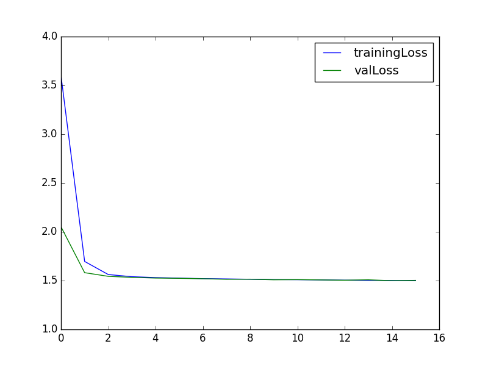
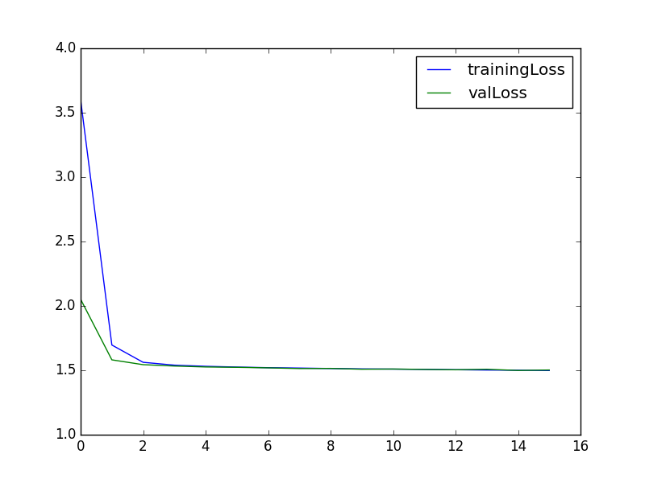

GRIDcorpus with/without mouth alignment
GRIDcorpus with/without mean subtraction
GRIDcorpus critic for LipReader
1) GRIDcorpus with mouth alignment and with mean subtraction : 1-SimpleSeq2Seq-h256-depth2-Adam-5e-04-GRIDcorpus-s0107-ss0909-meanSub-tAlign-vAlign-epoch031-tl0.1218-ta0.9174-vl0.3024-va0.8788
2) GRIDcorpus without mouth alignment and with mean subtraction : 2-SimpleSeq2Seq-h256-depth2-Adam-5e-04-GRIDcorpus-s0107-s0909-meanSub-tMouth-vMouth-epoch066-tl0.1344-ta0.9269-vl0.3941-va0.8688
3) GRIDcorpus with mouth alignment and with mean subtraction : 7-SimpleSeq2Seq-h256-depth2-Adam-5e-04-GRIDcorpus-s0107-s0909-NOmeanSub-tAlign-vAlign-epoch044-tl0.1238-ta0.9002-vl0.3443-va0.8547
4) GRIDcorpus without mouth alignment and with mean subtraction : 6-SimpleSeq2Seq-h256-depth2-Adam-5e-04-GRIDcorpus-s0107-s0909-NOmeanSub-tMouth-vMouth-epoch045-tl0.1856-ta0.8806-vl0.4035-va0.8271.hdf5
1) 5-C3DCritic-l1f4-l2f4-l3f8-fc1n8-vid8-oHn16-Adam-1e-04-GRIDcorpus-s0107-s0909-meanSub-tMouth-vMouth
2) 8-C3DCritic-l1f4-l2f4-l3f4-fc1n4-vid4-oHn4-Adam-1e-04-GRIDcorpus-s0107-s0909-NOmeanSub-tAlign-vAlign
1) Example of wrong dataset input (conducted 21 experiments with varying model)
 
